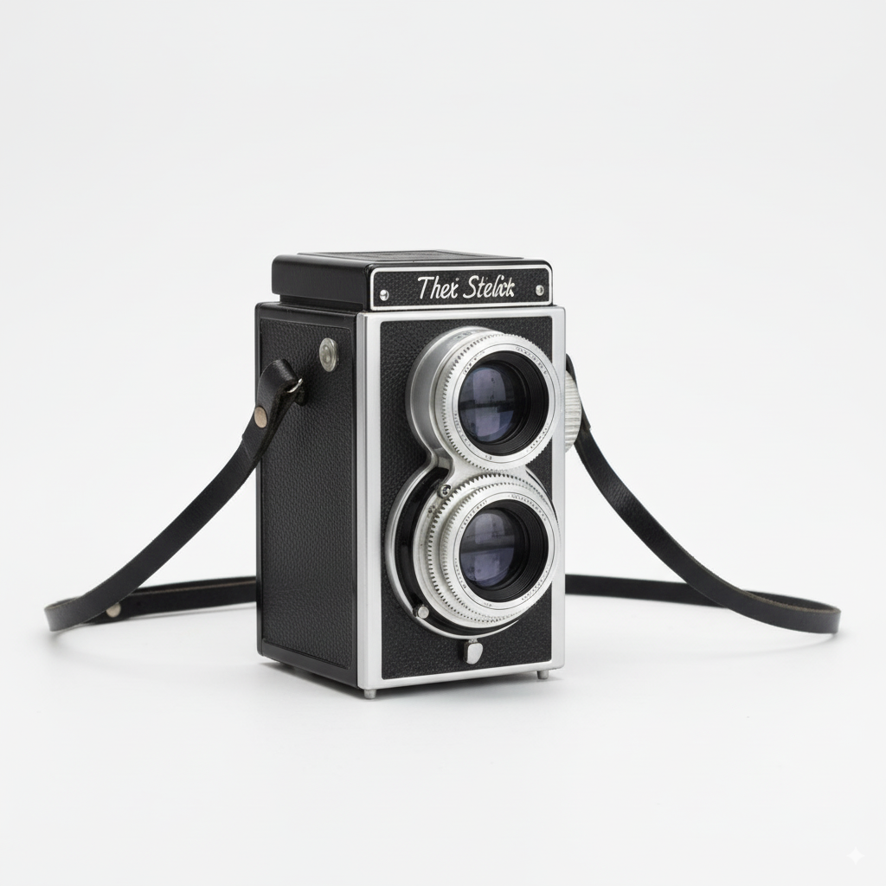

Cámara Analógica
Descripción: Cámara analógica de la marca "Zenith" modelo "B", fabricada en los años 70. Lente f/3.5, funciona perfectamente. Ideal para coleccionistas o para experimentar con fotografía analógica.
Estado: Excelente, con mínimas marcas de uso. Lente limpia sin hongos.
Precio: $50
Contacto: Interesados enviar email a tu-email@example.com o WhatsApp al +XX XXXX-XXXX.